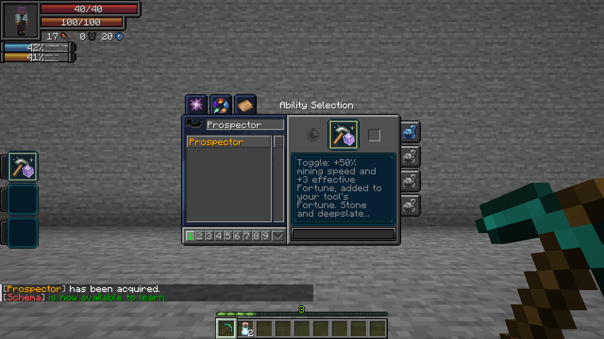
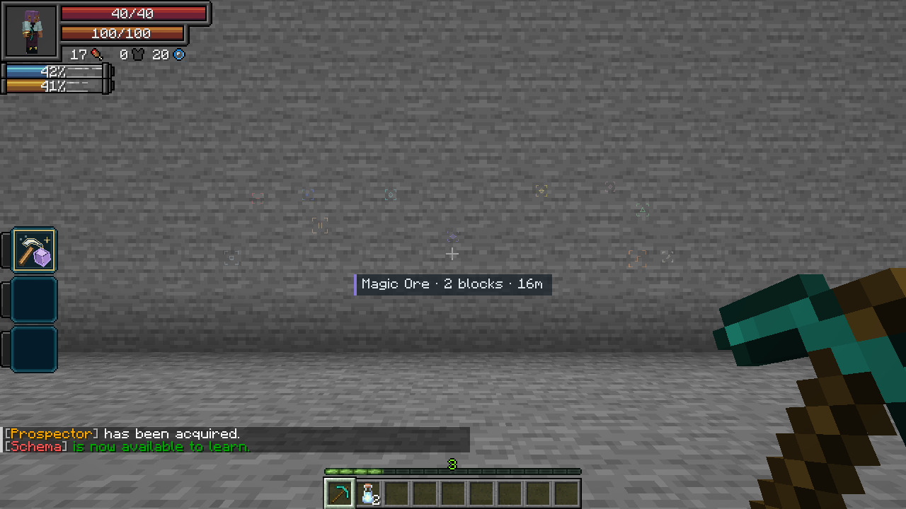
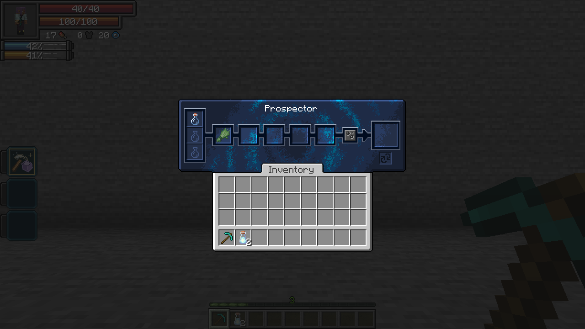

Prospector · Passive, Toggle
- Mining speed +50%.
- Fortune +3, added to your tool's level. Fortune III becomes effective Fortune VI. The tool retains its actual enchantments and durability; Silk Touch behaves normally.
- Stone/deepslate finds: each suitable-tool break has a 1% chance to drop one extra resource. Coal, raw iron and raw copper are most common. Raw gold, redstone, lapis, quartz, diamonds, emeralds and magic ore shards can also appear.
- Ore vision: sense deposits through terrain within 32 blocks. Faint markers use different colors and glyphs; magic ore uses violet double diamonds. Look toward a marker to see the ore name, number of surveyed blocks in that deposit and distance. Only nearby loaded terrain is surveyed.
Enable its checkbox in Tensura's Skills → Unique menu. The passive does not require a skill slot.
Damage type: None.

Refine · Active, Press
Open Tensura's normal refining menu. Place base inputs in the three left slots and reagents in the five middle slots, then use the native Refine or Repeat button. Existing refining recipes apply. Ingredients and output remain stored when you close the menu.
Refine works with the passive disabled. Damage type: None. Cost: No aura or magicules; recipes consume their ingredients. Cooldown: None.
